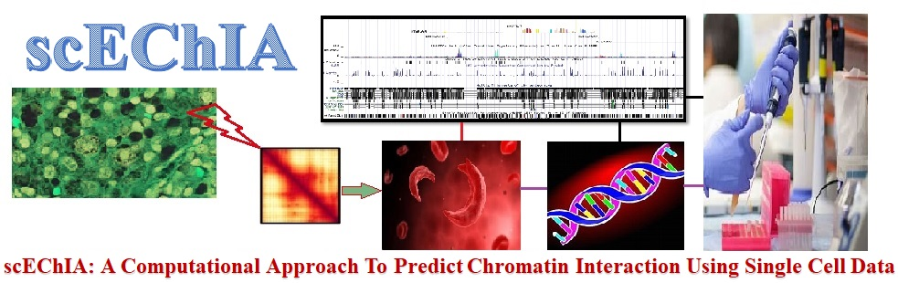

Introduction:
scEChIA (Single Cell Epigenome Chromatin Interaction Analysis) is a computational method that can predict chromatin interactions among distal sites with high accuracy. scEChIA can also make UCSC track on predicted interactions that may be useful for genomics studies based on chromatin interactions using the UCSC Genome Browser.
How to Install package:
version.string R version 3.6.0
These libraries need to be installed before the package is installed : varbvs, pracma, glassoFast, nor1mix, roxygen2.
install.packages("scEChIA_0.1.0.tar.gz", repos=NULL, type="source")
Library required for scEChIA package:
library(varbvs)
library(pracma)
library(glassoFast)
library(nor1mix)
library(roxygen2)
library(scEChIA)
Chromatin interaction prediction using differential rho:
Function_name: Interaction_Prediction_1
Interaction_Prediction_1 can predict interaction with the help of two different cell types' rho value. First we will pass HiC data from two different celltypes and take average of both HiC data to define as final rho matrix for predicting interaction from single cell data.
How to run:
setwd(system.file("data", package="scEChIA")) #Keep your input data format like example data
genomic_region1 = read.table('K562_HiC_chr17.txt')
genomic_region1[is.na(genomic_region1)] = 0
genomic_region2 = read.table('IMR90_HiC_chr17.txt')
genomic_region2[is.na(genomic_region2)] = 0
gap = 25000 #Bin size 25kb (User can change it as per his choice)
patternf = 17 #Chromosome number (User can change it according to chromosome number)
chrNo = patternf
data = read.table('GM12878_SC_chr17.txt')
chrinfo = data[, 1:3] #Chromosome location (chr, start, end)
chrNo = patternf
startCell = 96 #start sample column
endCell = 575 #end sample column
chromSize = 83257441 #Size of chromosome 17 (Change it according to chromosome number. Follow heading Chromosome Size of hg19)
rhomatrix = rhomatAvg(genomic_region1, genomic_region2, gap, patternf, data, chrinfo)
predicted_interaction = Interaction_Prediction_1(chrinfo, data, rhomatrix, chrNo, startCell, endCell, chromSize)
Chromatin interaction prediction using constant rho:
Function_name: Interaction_Prediction_2
Interaction_Prediction_2 can predict interaction with the help of constant rho value.
How to run:
gap = 25000 #Bin size 25kb (User can change it as per his choice)
patternf = 17 #Chromosome number (User can change it according to chromosome number)
chrNo = patternf
data = read.table('GM12878_SC_chr17.txt')
chrinfo = data[, 1:3] #Chromosome location (chr, start, end)
chrNo = patternf
startCell = 96 #start sample
endCell = 575 #end sample
chromSize = 83257441 #Size of chromosome 17 (Change it according to chromosome number. Follow heading Chromosome Size of hg19)
rhoConstant = 0.01 #user can change the value of rhoConstant
predicted_interaction = Interaction_Prediction_2(chrinfo, data, rhoConstant, chrNo, startCell, endCell, chromSize)
How to make UCSC Track:
Function_name: ucscTrack
Function ucscTrack can create track file for UCSC Genome Browser on predicted interactions. Using addscore value it will provide perfect interaction score in decimal numbers.
How to run:
predInteraction = predicted_interaction
addscore = 500 #User can increase or decrease addscore value as per his choice
ucscTrack_file = ucscTrack(predInteraction, addscore)
Note:
After generating the UCSC track file, the bottom line has to be pasted on the header to be visualized on the UCSC Genome Browser.
track type=interact name="User and celltype" description="User and celltype" interactDirectional=true maxHeightPixels=200:100:50 visibility=full
#chrom chromStart chromEnd name score value exp color sourceChrom sourceStart sourceEnd sourceName sourceStrand targetChrom targetStart targetEnd targetName targetStrand
Chromosome Size of hg19
chr1: 248956422, chr2: 242193529, chr3: 198295559, chr4: 190214555, chr5: 181538259, chr6: 170805979, chr7: 159345973, chr8: 145138636, chr9: 138394717, chr10: 133797422, chr11: 135086622, chr12: 133275309, chr13: 114364328, chr14: 107043718, chr15: 101991189, chr16: 90338345, chr17: 83257441, chr18: 80373285, chr19: 58617616, chr20: 64444167, chr21: 46709983, chr22: 50818468, chrX: 156040895, chrY: 57227415